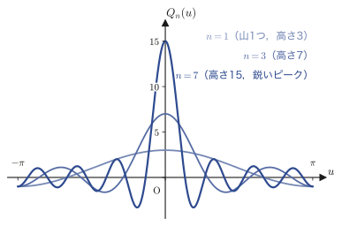
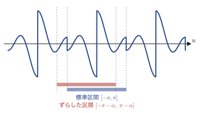
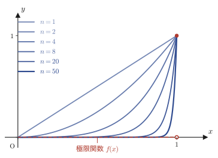
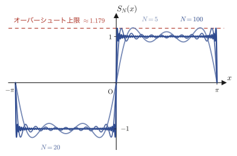

第29章フーリエ級数の収束理論
第28章では，周期関数 $f(x)$ に対してフーリエ係数 $C_k$（あるいは $a_k,b_k$）を計算し，形式的な級数
$$ f_n(x)=\sum_{k=-n}^{n}C_k\,e^{i\frac{k\pi}{L}x} $$を作った．しかし，これはまだ「級数を作っただけ」である．次の2つの問いにはまだ答えていない．
- この $f_n(x)$ は，$n\to\infty$ のときに本当に元の $f(x)$ に近づくのか．
- もし近づくとして，$f(x)$ が途中でジャンプしている点（不連続点）では，いったい何に近づくのか．そこでは $f(x)$ の値そのものが定まらない（左右で値が違う）のに．
この章はこの2つの問いに正面から答える．道具立ては大きく2つある．第一に，フーリエ係数の中に現れる積分 $\int f(x)\sin\alpha x\,dx$ のような「振動数をどんどん上げていく積分」が実は $0$ に近づいてしまうという事実（リーマン・ルベーグ（Riemann–Lebesgue）の補助定理，29.1節）．第二に，部分和 $f_n(x)$ を「ディリクレ核（Dirichlet kernel）」と呼ばれる関数との畳み込み（たたみこみ）として書き直し，リーマン・ルベーグの補助定理を使って収束先を確定させる議論（フーリエの定理，29.2節）．最後に，「収束する」ということの意味そのものを2種類に区別する——各点収束と一様収束（29.3節）．これは大学数学で初めて出会う $\varepsilon$-$N$論法という「限りなく近づく」を式で表す言葉づかいの，最初の本格的な応用でもある．
- リーマン・ルベーグの補助定理の主張と，区間の等分割・三角不等式・$\varepsilon$-$N$論法を使った完全な証明
- フーリエ級数の部分和 $P_n(\alpha)$ を，ディリクレ核 $Q_n(u)=\sin\!\left(\left(n+\frac12\right)u\right)/\sin\frac{u}{2}$ による積分（畳み込み）として書き直す技法
- 周期関数の積分区間は，同じ長さだけずらしても値が変わらないこと（周期性による積分区間の取り替え）
- フーリエの定理：区分的に滑らかな周期関数のフーリエ級数は，連続点では $f(x)$ に，不連続点では左右極限の平均 $\dfrac{f(x+0)+f(x-0)}{2}$ に収束すること，その完全な証明
- 各点収束と一様収束の定義の違い（$\varepsilon$-$N$論法における量化子 $\forall x$ と $\exists N$ の順序の違い）
- 各点収束するが一様収束はしない具体例（$f_n(x)=x^n$）と，一様収束する連続関数列の極限は連続であるという定理
- 寄り道：矩形波のフーリエ級数に現れる「ギブス現象（Gibbs phenomenon）」——不連続点近くで部分和が本来の値を追い越してしまう現象
29.1 リーマン・ルベーグの補助定理
フーリエ係数 $C_k=\dfrac{1}{2\pi}\displaystyle\int_{-\pi}^{\pi}f(t)e^{-ikt}\,dt$（第28章）を見つめ直そう．$k$ を固定して積分を計算すればただの数だが，「$k$ をどんどん大きくしたら $C_k$ はどうなるか」という問いを立てることができる．たとえば $\displaystyle\int_0^{\pi}x\sin(nx)\,dx$ を $n=1,2,3,\dots$ と計算していくと，符号はプラスマイナスと入れ替わりながらも，その大きさはどんどん小さくなっていく——これは偶然ではない．$\sin(nx)$ は $n$ が大きいほど区間 $[0,\pi]$ の中で激しく振動し，山と谷が細かく並ぶ．$x$ 自体はゆっくりとしか変化しないので，一つ一つの山でできる正の面積と，隣の谷でできる負の面積がほぼ打ち消し合ってしまうのである．この「激しく振動する関数との積分は $0$ に近づく」という事実を，任意の区分的に連続な関数 $f(x)$（有限個の点を除いて連続で，しかも不連続点でも左右の極限がちゃんと存在する関数．第28章で定義した）に対して厳密に述べ，証明するのが本節の目標である．
定理29.1 リーマン・ルベーグ（Riemann–Lebesgue）の補助定理
$f(x)$ が閉区間 $a\le x\le b$ で区分的に連続な関数であるとき，次が成り立つ．
\begin{equation} \text{(I)}\ \lim_{\alpha\to\infty}\int_a^b f(x)\sin\alpha x\,dx = 0, \qquad \text{(II)}\ \lim_{\alpha\to\infty}\int_a^b f(x)\cos\alpha x\,dx = 0. \label{eq:29-RL} \end{equation}証明の骨格は次のとおりである．区間 $[a,b]$ を細かく分割し，各小区間の中では $f(x)$ をほぼ定数とみなす．すると積分は「定数 $\times\sin\alpha x$」の積分の集まりに近似でき，そちらは $\alpha$ を大きくすると簡単に評価できる．あとは「ほぼ定数とみなした誤差」が小さいことを言えばよい．
証明（(I) の場合）
$f(x)$ は区間 $a\le x\le b$ で有限な値をとる区分的に連続な関数だから，その中での最大値（正確には上限）が存在する．それを $M=\max\{\abs{f(x)}\}$ とおくと，
$$ \abs{f(x)}\le M \qquad (a\le x\le b) $$が区間内のすべての $x$ で成り立つ．次に区間 $[a,b]$ を，図29.1のように
$$ a=x_1 \lt x_2 \lt \cdots \lt x_n \lt x_{n+1}=b $$となるように等間隔に $n$ 等分する．各小区間の幅を $\Delta x=x_{k+1}-x_k$（$k=1,2,\dots,n$）とおくと，すべての小区間の幅は同じだから $b-a=n\,\Delta x$ が成り立つ．
ここが証明のポイントである．積分区間 $[a,b]$ 全体を一気に評価するのは難しいので，$n$ 個の小区間に分けて和として書き直す（積分区間の加法性）．
$$ \int_a^b f(x)\sin\alpha x\,dx = \sum_{k=1}^{n}\int_{x_k}^{x_{k+1}} f(x)\sin\alpha x\,dx $$各項の被積分関数 $f(x)$ を，小区間の左端での値 $f(x_k)$（定数）と，そこからのずれ $f(x)-f(x_k)$ に分けて書く．$f(x)=\{f(x)-f(x_k)\}+f(x_k)$ という，足して引いただけの恒等式である．
$$ = \sum_{k=1}^{n}\int_{x_k}^{x_{k+1}} \Big[\{f(x)-f(x_k)\}+f(x_k)\Big]\sin\alpha x\,dx $$積分は和に対して線形（$\int(A+B)=\int A+\int B$）だから，被積分関数の中の和をそのまま2つの積分の和に分けられる．絶対値をとって，三角不等式 $\abs{A+B}\le\abs{A}+\abs{B}$ を各小区間の中でも，小区間をまたぐ和の中でも使うと，
\begin{equation} \left|\int_a^b f(x)\sin\alpha x\,dx\right| = \left|\sum_{k=1}^{n}\left(\int_{x_k}^{x_{k+1}} \{f(x)-f(x_k)\}\sin\alpha x\,dx + \int_{x_k}^{x_{k+1}} f(x_k)\sin\alpha x\,dx\right)\right| \le \sum_{k=1}^{n}\left(\left|\int_{x_k}^{x_{k+1}} \{f(x)-f(x_k)\}\sin\alpha x\,dx\right| + \left|\int_{x_k}^{x_{k+1}} f(x_k)\sin\alpha x\,dx\right|\right) \label{eq:29-RL-split} \end{equation}この右辺の2種類の項を，それぞれ別々に評価する．
1つめの項（ずれの項）．$\abs{\sin\alpha x}\le1$ はつねに成り立つ（正弦の値は $-1$ 以上 $1$ 以下）ので，積分の絶対値は被積分関数の絶対値の積分以下（$\left|\int g\right|\le\int\abs{g}$，これも三角不等式の積分版）であることと合わせて，
$$ \left|\int_{x_k}^{x_{k+1}} \{f(x)-f(x_k)\}\sin\alpha x\,dx\right| \le \int_{x_k}^{x_{k+1}} \abs{f(x)-f(x_k)}\cdot\underbrace{\abs{\sin\alpha x}}_{\le\,1}\,dx \le \int_{x_k}^{x_{k+1}} \abs{f(x)-f(x_k)}\,dx $$を得る．$\sin\alpha x$ を $1$ で置き換えて上から評価した，という意味である．
2つめの項（定数の項）．$f(x_k)$ は $x$ に依存しない定数だから積分の外に出せる．残った $\displaystyle\int_{x_k}^{x_{k+1}}\sin\alpha x\,dx$ は具体的に計算できる（$\sin$ の原始関数は $-\cos/\alpha$）．
$$ \left|\int_{x_k}^{x_{k+1}} \underbrace{f(x_k)}_{\text{定数}}\sin\alpha x\,dx\right| = \abs{f(x_k)}\cdot\left|\int_{x_k}^{x_{k+1}} \sin\alpha x\,dx\right| = \abs{f(x_k)}\cdot\left|\frac{1}{\alpha}\bigl(\cos\alpha x_{k+1}-\cos\alpha x_k\bigr)\right| $$$\abs{f(x_k)}\le M$ と，余弦もまた $\abs{\cos\theta}\le1$ を満たすことを使うと，三角不等式によって
$$ \le M\cdot\frac{1}{\alpha}\Bigl(\underbrace{\abs{\cos\alpha x_{k+1}}}_{\le\,1}+\abs{\cos\alpha x_k}\Bigr) \le \frac{2M}{\alpha} $$となる．以上の2つの評価を式\eqref{eq:29-RL-split}に戻すと，
\begin{equation} \left|\int_a^b f(x)\sin\alpha x\,dx\right| \le \sum_{k=1}^{n}\left(\int_{x_k}^{x_{k+1}} \abs{f(x)-f(x_k)}\,dx + \frac{2M}{\alpha}\right) \label{eq:29-RL-mid} \end{equation}を得る．ここまでは $n$（分割の細かさ）を固定して $\alpha$ について評価してきた．残る仕事は，1つめの項 $\displaystyle\int_{x_k}^{x_{k+1}}\abs{f(x)-f(x_k)}\,dx$ を小さくすることである．
イメージ：分割を細かくすると $f(x)-f(x_k)$ は小さくなる
$f(x)$ は（不連続点を除いて）連続だから，$x$ を $x_k$ に近づければ $f(x)$ は $f(x_k)$ にいくらでも近づく．分割の数 $n$ を大きくして小区間の幅 $\Delta x$ を狭くしていけば，各小区間の中で $x$ は $x_k$ の近くしか動けなくなるので，$f(x)-f(x_k)$ はどんどん小さな値しかとれなくなる．
これを式で正確に述べたのが $\varepsilon$-$N$論法である（第1章で学んだ言葉づかいをそのまま使う）．「どんな小さな正の数 $\varepsilon$（イプシロン，ギリシャ文字で「小さな誤差」を表すのに使う慣習の文字）を指定されても，分割数 $n$ を十分大きくとれば（形式的には，ある自然数 $N$ が存在して $n$ がそれより大きければ），どの小区間の中でも $\abs{f(x)-f(x_k)}$ はその $\varepsilon$ より小さくできる」ということを，
\begin{equation} \forall\varepsilon\gt0,\ \exists N\in\N\ \text{s.t.}\ n\gt N \Rightarrow \abs{f(x)-f(x_k)}\lt\varepsilon\quad(\text{各小区間内の全ての}x\text{について}) \label{eq:29-RL-epsN} \end{equation}と書く．記号の読み方を確認しておこう．$\forall$（フォーオール，for all，「すべての」）．$\exists$（イグジスツ，there exists，「存在する」）．$\N$ は自然数全体の集合．s.t. は such that（「〜となるように」）の略．全体を日本語で読めば「任意の正の数 $\varepsilon$ に対して，ある自然数 $N$ が存在して，$n$ がその $N$ より大きければ，$\abs{f(x)-f(x_k)}$ は $\varepsilon$ より小さい」となる．
証明の続き：$\varepsilon$-$N$論法で仕上げる
式\eqref{eq:29-RL-epsN}により，与えられた $\varepsilon\gt0$ に対して分割数を $n=N$（以上）にとれば，すべての小区間で $\abs{f(x)-f(x_k)}\lt\varepsilon$ となる．このとき $\displaystyle\int_{x_k}^{x_{k+1}}\abs{f(x)-f(x_k)}\,dx \lt \displaystyle\int_{x_k}^{x_{k+1}}\varepsilon\,dx=\varepsilon\,\Delta x_k$ である（被積分関数を大きい定数 $\varepsilon$ で上から押さえてから積分した）．これを式\eqref{eq:29-RL-mid}に代入し，$\Delta x_k$ の総和が $\sum_{k=1}^n\Delta x_k=x_{n+1}-x_1=b-a$ になることを使うと，
\begin{equation} \left|\int_a^b f(x)\sin\alpha x\,dx\right| \lt \sum_{k=1}^{n}\left(\varepsilon\,\Delta x_k+\frac{2M}{\alpha}\right) = \varepsilon(\underbrace{x_{n+1}}_{b}-\underbrace{x_1}_{a})+\frac{2Mn}{\alpha} = \varepsilon(b-a)+\frac{2Mn}{\alpha} \label{eq:29-RL-final} \end{equation}を得る．ここで注意したいのは，この不等式の中の $n$（つまり $N$）は $\varepsilon$ だけから決まっていて，$\alpha$ にはまったく依存していないという点である．だからこそ，$n=N$ を固定したまま，改めて $\alpha\to\infty$ という極限を考えることができる．$N$ を固定すれば $2MN/\alpha$ は $\alpha$ とともにいくらでも小さくなり，$0$ に近づく．したがって式\eqref{eq:29-RL-final}の右辺は $\alpha\to\infty$ で $\varepsilon(b-a)$ に近づく．
ここで $\limsup$（リムサップ，limit superior，上極限）とは，$\displaystyle\limsup_{\alpha\to\infty}g(\alpha):=\lim_{\alpha\to\infty}\Bigl(\sup_{\beta\ge\alpha}g(\beta)\Bigr)$ で定義される量のことで，「$\lim$ そのものが存在するかどうかまだわからない段階でも必ず定義できる，暴れても構わないので上から押さえた極限」である（$\sup_{\beta\ge\alpha}g(\beta)$ は $\alpha$ を大きくするほど単調に減っていくか一定なので，この $\lim$ 自体は必ず存在する）．なぜここで普通の $\lim$ ではなく $\limsup$ を使うのかというと，この段階では $\left|\int_a^b f(x)\sin\alpha x\,dx\right|$ という量が $\alpha\to\infty$ でただ一つの値に近づく（ふつうの意味の $\lim$ が存在する）かどうかはまだ証明できていないからである——それでも「$\alpha$ が十分大きいところでは，どの $\alpha$ で見ても値が $\varepsilon(b-a)$ を大きくは超えない」ということだけは，$\limsup$ を使えば確実に言える．正確には，
$$ \limsup_{\alpha\to\infty}\left|\int_a^b f(x)\sin\alpha x\,dx\right| \le \varepsilon(b-a) $$が成り立つ．しかも $\varepsilon\gt0$ は最初から任意に選べたのだから，この不等式の右辺はいくらでも小さくできる．左辺は $\varepsilon$ に依存しない量なので，$\varepsilon(b-a)$ より小さいことがすべての $\varepsilon\gt0$ について言えるなら，左辺はちょうど $0$ でなければならない．よって，
$$ \lim_{\alpha\to\infty}\int_a^b f(x)\sin\alpha x\,dx = 0 $$が示された．（証明終わり）
注意：(II) の余弦の場合も同じ議論でよい
ノートの Evidence は (I)（正弦の場合）だけを詳しく書いているが，(II)（余弦の場合）もまったく同じ手順で証明できる．違うのは，2つめの項の計算で $\displaystyle\int_{x_k}^{x_{k+1}}\cos\alpha x\,dx=\dfrac{1}{\alpha}\bigl(\sin\alpha x_{k+1}-\sin\alpha x_k\bigr)$ となる点だけであり，$\abs{\sin\theta}\le1$ を使えば同じく $\dfrac{2M}{\alpha}$ の評価が得られる．あとの議論は $\sin\alpha x$ を $\cos\alpha x$ に置き換えるだけで一字一句そのまま通用する．したがって $\displaystyle\lim_{\alpha\to\infty}\int_a^bf(x)\cos\alpha x\,dx=0$ も成り立つ．
複素形の指数関数を使えば，(I)(II)を1つにまとめて $\displaystyle\lim_{\alpha\to\infty}\int_a^bf(x)e^{i\alpha x}\,dx=0$ と書くこともできる（$e^{i\alpha x}=\cos\alpha x+i\sin\alpha x$ で実部・虚部それぞれに (II)(I) を適用するだけである）．この形は第29.2節でそのまま使う．
例題29.1 $\displaystyle\int_0^{\pi}x\sin(nx)\,dx$ の直接計算とリーマン・ルベーグの補助定理
$n$ を正の整数とする．(a) リーマン・ルベーグの補助定理から $\displaystyle\lim_{n\to\infty}\int_0^{\pi}x\sin(nx)\,dx=0$ が予想できることを説明せよ．(b) 部分積分によって $\displaystyle\int_0^{\pi}x\sin(nx)\,dx$ を実際に計算し，(a)の予想が正しいことを確かめよ．
解答 (a) $f(x)=x$ は閉区間 $[0,\pi]$ で連続（したがって区分的に連続でもある）だから，定理29.1の(I)がそのまま適用できて $\displaystyle\lim_{n\to\infty}\int_0^{\pi}x\sin(nx)\,dx=0$ が成り立つはずである．
(b) $u=x$，$dv=\sin(nx)\,dx$ とおくと，$du=dx$，$v=-\dfrac{\cos(nx)}{n}$ である．部分積分公式 $\displaystyle\int u\,dv=[uv]-\int v\,du$ より，
$$ \int_0^{\pi}x\sin(nx)\,dx = \left[-\frac{x\cos(nx)}{n}\right]_0^{\pi} + \frac{1}{n}\int_0^{\pi}\cos(nx)\,dx = -\frac{\pi\cos(n\pi)}{n} + \frac{1}{n}\left[\frac{\sin(nx)}{n}\right]_0^{\pi} $$$n$ は整数だから $\sin(n\pi)=0$ であり，第2項は消える．また $\cos(n\pi)=(-1)^n$（$n$ が偶数なら $1$，奇数なら $-1$）だから，
$$ \int_0^{\pi}x\sin(nx)\,dx = \frac{\pi(-1)^{n+1}}{n} $$を得る．したがって $\left|\displaystyle\int_0^{\pi}x\sin(nx)\,dx\right|=\dfrac{\pi}{n}\to0\ (n\to\infty)$ となり，(a)の予想と一致する．（sympyで検算済み：$n=5,20,100$ で数値積分と厳密解 $\pi(-1)^{n+1}/n$ が完全に一致することを確認した．）
例題29.2 $\displaystyle\int_{-\pi}^{\pi}x^2\cos(nx)\,dx$ の直接計算
$n$ を正の整数とする．$\displaystyle\int_{-\pi}^{\pi}x^2\cos(nx)\,dx$ を計算し，$n\to\infty$ で $0$ に収束することを確かめよ．リーマン・ルベーグの補助定理の主張と比べて何が言えるか．
解答 部分積分を2回使う．まず $u=x^2$，$dv=\cos(nx)dx$（$v=\sin(nx)/n$）とおくと，
$$ \int x^2\cos(nx)\,dx = \frac{x^2\sin(nx)}{n} - \frac{2}{n}\int x\sin(nx)\,dx $$右辺の $\displaystyle\int x\sin(nx)\,dx$ にもう一度部分積分（$u=x$，$dv=\sin(nx)dx$）を使うと $\displaystyle\int x\sin(nx)\,dx=-\dfrac{x\cos(nx)}{n}+\dfrac{\sin(nx)}{n^2}$ だから，
$$ \int x^2\cos(nx)\,dx = \frac{x^2\sin(nx)}{n} + \frac{2x\cos(nx)}{n^2} - \frac{2\sin(nx)}{n^3} $$を得る．これを $x=-\pi$ から $x=\pi$ まで代入する．$n$ は整数なので $\sin(n\pi)=\sin(-n\pi)=0$ であり，第1項・第3項は上端・下端のどちらでも消える．残るのは第2項だけで，$\cos(n\pi)=\cos(-n\pi)=(-1)^n$（余弦は偶関数）に注意すると，
$$ \int_{-\pi}^{\pi}x^2\cos(nx)\,dx = \left[\frac{2x\cos(nx)}{n^2}\right]_{-\pi}^{\pi} = \frac{2\pi(-1)^n}{n^2} - \frac{2(-\pi)(-1)^n}{n^2} = \frac{4\pi(-1)^n}{n^2} $$を得る．したがって $\left|\displaystyle\int_{-\pi}^{\pi}x^2\cos(nx)\,dx\right|=\dfrac{4\pi}{n^2}\to0\ (n\to\infty)$ となり，定理29.1(II)（$f(x)=x^2$ は $[-\pi,\pi]$ で連続だから適用できる）の主張のとおり $0$ に収束することが確かめられた．しかも収束の速さ（オーダー）は $1/n^2$ であり，例題29.1の $1/n$ よりも速い——$f(x)=x^2$ が $f(x)=x$ より滑らかで，値の変化がゆるやかな分だけ振動との打ち消し合いが強く効くのだと解釈できる．（sympyで検算済み：$n=1,2,3,5,10,50,200$ のすべてで厳密解 $4\pi(-1)^n/n^2$ と一致することを確認した．）
29.2 フーリエの定理——各点収束の証明
いよいよ本題である．第28章で定義した，周期 $2\pi$ の複素フーリエ級数の部分和
\begin{equation} P_n(\alpha):=\sum_{k=-n}^{n}C_k\,e^{ik\alpha}, \qquad C_k=\frac{1}{2\pi}\int_{-\pi}^{\pi}f(t)\,e^{-ikt}\,dt \label{eq:29-Pn-def} \end{equation}を考える（評価する点を $x$ ではなく $\alpha$ と書くのは，ノートの記法に合わせたもので，特別な意味はない．29.1節で「$\alpha\to\infty$」として使った振動数としての $\alpha$ とはまったく別の役割での再利用であることに注意してほしい）．$f(x)$ は周期 $2\pi$ の区分的に滑らかな関数（$f$ 自身と $f'$ がともに区分的に連続な関数．第28章参照）とする．知りたいのは $\displaystyle\lim_{n\to\infty}P_n(\alpha)$ である．
定理29.2 フーリエ（Fourier）の定理
$f(x)$ を周期 $2\pi$ の区分的に滑らかな周期関数とする．このとき，すべての $\alpha$ に対して，
\begin{equation} \lim_{n\to\infty}P_n(\alpha)=\lim_{n\to\infty}\sum_{k=-n}^{n}C_k\,e^{ik\alpha} =\begin{cases} f(\alpha) & (f\text{ が }\alpha\text{ で連続のとき}) \\[4pt] \dfrac{f(\alpha+0)+f(\alpha-0)}{2} & (f\text{ が }\alpha\text{ で不連続のとき}) \end{cases} \label{eq:29-fourier-thm} \end{equation}が成り立つ．ここで $f(\alpha+0)=\displaystyle\lim_{u\to0+}f(\alpha+u)$，$f(\alpha-0)=\displaystyle\lim_{u\to0-}f(\alpha+u)$ は，それぞれ $\alpha$ における右側極限・左側極限である．連続点では両側極限が一致して $f(\alpha)$ そのものになるから，実は下の場合分けだけで両方が表現できる——不連続点では左右の「平均」に収束する，というのがこの定理の核心である．
証明の方針を先に述べておく．$P_n(\alpha)$ を，$f$ と「ディリクレ核（Dirichlet kernel）」と呼ばれる関数 $Q_n(u)$ との積分（数学ではこれを畳み込み（たたみこみ，convolution）と呼ぶ）として書き直す．そのうえで $P_n(\alpha)-\dfrac{f(\alpha+0)+f(\alpha-0)}{2}$ を式変形し，最後にリーマン・ルベーグの補助定理（定理29.1）を適用して，それが $0$ に近づくことを示す．
29.2.1 $P_n(\alpha)$ とディリクレ核
証明（その1）：$P_n(\alpha)$ を積分の形に書き直す
式\eqref{eq:29-Pn-def}の $C_k$ を代入すると，
$$ P_n(\alpha)=\sum_{k=-n}^{n}\left\{\frac{1}{2\pi}\int_{-\pi}^{\pi}f(t)\,e^{-ikt}\,dt\right\}\cdot e^{ik\alpha} $$$e^{ik\alpha}$ は積分変数 $t$ を含まない定数なので，積分の中に入れてよい．また，和は $k=-n$ から $n$ までの有限個の項の和にすぎないので，和と積分の順序を交換しても値は変わらない（無限和の場合はここで一様収束性などの議論が必要になるが，有限和なら無条件に許される）．
$$ =\frac{1}{2\pi}\sum_{k=-n}^{n}e^{ik\alpha}\int_{-\pi}^{\pi}f(t)\,e^{-ikt}\,dt =\frac{1}{2\pi}\int_{-\pi}^{\pi}f(t)\left\{\sum_{k=-n}^{n}e^{-ik(t-\alpha)}\right\}dt $$ここで $t-\alpha=u$（つまり $t=\alpha+u$）とおく置換積分を行う．$t:-\pi\to\pi$ のとき $u:-\pi-\alpha\to\pi-\alpha$ であり，$dt=du$ だから，
$$ P_n(\alpha)=\frac{1}{2\pi}\int_{-\pi-\alpha}^{\pi-\alpha}f(\alpha+u)\left\{\sum_{k=-n}^{n}e^{-iku}\right\}du $$となる．ここで一つ観察しておく価値がある．和 $\displaystyle\sum_{k=-n}^{n}e^{-iku}$ は，$k$ を $-k$ に付け替えても和をとる範囲 $\{-n,\dots,n\}$ 自体は変わらない（符号を変えても同じ集合を動くだけ）ので，
$$ \sum_{k=-n}^{n}e^{-iku}=\sum_{k=-n}^{n}e^{iku} $$が成り立つ（足す順番が変わるだけで，足しているものの集合は同じだから）．そこでこの和を
\begin{equation} Q_n(u):=\sum_{k=-n}^{n}e^{iku} \label{eq:29-Qn-def} \end{equation}と定義すると（これがディリクレ核である），
\begin{equation} P_n(\alpha)=\frac{1}{2\pi}\int_{-\pi-\alpha}^{\pi-\alpha}f(\alpha+u)\,Q_n(u)\,du \label{eq:29-Pn-conv} \end{equation}と書ける．（証明その1終わり，その2に続く）
証明（その2）：ディリクレ核 $Q_n(u)$ を閉じた形に直す
式\eqref{eq:29-Qn-def}の和を具体的に書き下すと，
$$ Q_n(u)=\sum_{k=-n}^{n}e^{iku}=e^{-inu}+e^{-i(n-1)u}+\cdots+e^{i(n-1)u}+e^{inu} $$であり，これは初項 $e^{-inu}$，公比 $e^{iu}$，項数 $2n+1$ の等比数列の和である．高校で学んだ等比数列の和の公式 $\displaystyle\sum_{j=0}^{2n}r^{j}=\frac{1-r^{2n+1}}{1-r}$（$r\ne1$）を $r=e^{iu}$（$u\ne0$ なら $r\ne1$）に適用すると，
$$ Q_n(u)=e^{-inu}\cdot\frac{1-\left(e^{iu}\right)^{2n+1}}{1-e^{iu}} =\frac{e^{-inu}-e^{i(n+1)u}}{1-e^{iu}} $$を得る．分子・分母をともに $e^{-iu/2}$ 倍する（分母を $\sin$ の形にそろえるための技巧）．
$$ Q_n(u)=\frac{e^{-inu}\cdot e^{-iu/2}-e^{i(n+1)u}\cdot e^{-iu/2}}{e^{-iu/2}-e^{iu/2}} =\frac{e^{-i\left(n+\frac12\right)u}-e^{i\left(n+\frac12\right)u}}{e^{-i\frac{u}{2}}-e^{i\frac{u}{2}}} $$ここでオイラーの公式（第21章・第23章で学んだ $e^{i\theta}=\cos\theta+i\sin\theta$）から従う関係式 $\sin\theta=\dfrac{e^{i\theta}-e^{-i\theta}}{2i}$ を使う．分子は $-\bigl(e^{i(n+\frac12)u}-e^{-i(n+\frac12)u}\bigr)=-2i\sin\!\left(\left(n+\tfrac12\right)u\right)$，分母は $-\bigl(e^{iu/2}-e^{-iu/2}\bigr)=-2i\sin\dfrac{u}{2}$ なので，マイナスと $2i$ がともに約分できて，
\begin{equation} Q_n(u)=\frac{\sin\!\left(\left(n+\frac12\right)u\right)}{\sin\dfrac{u}{2}}\qquad(u\ne0) \label{eq:29-Qn-closed} \end{equation}という閉じた形（有限個の項の和ではなく，直接計算できる式）を得る．$u=0$ のときは式\eqref{eq:29-Qn-closed}の右辺は $0/0$ の不定形になってしまうが，もともとの定義\eqref{eq:29-Qn-def}に戻れば $Q_n(0)=\sum_{k=-n}^n 1=2n+1$（項数がそのまま値になる）であり，実際 $u\to0$ のとき $\sin\!\left(\left(n+\frac12\right)u\right)/\sin\frac{u}{2}\to2n+1$ となって（ロピタルの定理，あるいは基本極限 $\lim_{\theta\to0}\sin\theta/\theta=1$ から確認できる），$Q_n(u)$ は $u=0$ を含めて連続な関数である．（証明その2終わり）

例題29.3 ディリクレ核 $Q_3(u)$ の具体形
$Q_3(u)=\displaystyle\sum_{k=-3}^{3}e^{iku}$ を実部だけの和として具体的に書き下し，$u=\pi/2$ のときに公式\eqref{eq:29-Qn-closed}の値と一致することを確かめよ．
解答 $e^{iku}+e^{-iku}=2\cos ku$（オイラーの公式より）に注意して，$k=\pm1,\pm2,\pm3$ の項をペアにまとめると，
$$ Q_3(u)=1+2\cos u+2\cos2u+2\cos3u $$を得る（$k=0$ の項は $e^{0}=1$）．$u=\pi/2$ を代入すると，$\cos\frac{\pi}{2}=0$，$\cos\pi=-1$，$\cos\frac{3\pi}{2}=0$ だから，
$$ Q_3\!\left(\frac{\pi}{2}\right)=1+2\cdot0+2\cdot(-1)+2\cdot0=1-2=-1 $$一方，公式\eqref{eq:29-Qn-closed}から $Q_3\!\left(\frac{\pi}{2}\right)=\dfrac{\sin\left(\frac{7}{2}\cdot\frac{\pi}{2}\right)}{\sin\frac{\pi}{4}}=\dfrac{\sin\frac{7\pi}{4}}{\sin\frac{\pi}{4}}=\dfrac{-\frac{\sqrt2}{2}}{\frac{\sqrt2}{2}}=-1$ となり，一致する．（numpyで検算済み：$n=1,3,7$ について乱数点でも実部展開と閉じた形が一致することを確認した．また $\displaystyle\int_{-\pi}^{\pi}Q_n(u)\,du=2\pi$ も $n=1,3,7$ で数値積分により確認した．）
29.2.2 $\int_{-\pi}^{\pi}Q_n(u)\,du=2\pi$ と積分区間の取り替え
証明（その3）：$Q_n(u)$ を $-\pi$ から $\pi$ まで積分する
定義\eqref{eq:29-Qn-def}に戻り，項別に積分する（有限和だから項別積分してよい）．$k\ne0$ のとき $\displaystyle\int_{-\pi}^{\pi}e^{iku}\,du=\left[\frac{e^{iku}}{ik}\right]_{-\pi}^{\pi}=\frac{e^{ik\pi}-e^{-ik\pi}}{ik}=\frac{2i\sin k\pi}{ik}=\frac{2\sin k\pi}{k}=0$（$k$ は $0$ でない整数だから $\sin k\pi=0$）．$k=0$ の項だけは $e^{i0u}=1$ の積分で $\displaystyle\int_{-\pi}^{\pi}1\,du=2\pi$ になる．したがって，
\begin{equation} \int_{-\pi}^{\pi}Q_n(u)\,du=\underbrace{\int_{-\pi}^{\pi}e^{-inu}du}_{=0}+\cdots+\underbrace{\int_{-\pi}^{\pi}1\,du}_{=2\pi}+\cdots+\underbrace{\int_{-\pi}^{\pi}e^{inu}du}_{=0}=2\pi \label{eq:29-Qn-int} \end{equation}を得る．また，$k\to-k$ の置き換えで和の集合が変わらないという，先ほどと同じ理由により $Q_n(-u)=\displaystyle\sum_{k=-n}^{n}e^{-iku}=\displaystyle\sum_{k=-n}^{n}e^{iku}=Q_n(u)$ であり，$Q_n$ は偶関数である．偶関数を左右対称な区間で積分すれば両側の値は等しい（$u\to-u$ の置換積分で $\int_{-a}^0 g(u)du=\int_0^a g(-v)dv=\int_0^a g(v)dv$，最後の等号は $g$ が偶関数だから）ので，式\eqref{eq:29-Qn-int}と合わせて，
\begin{equation} \int_{-\pi}^{0}Q_n(u)\,du=\pi,\qquad \int_{0}^{\pi}Q_n(u)\,du=\pi \label{eq:29-Qn-half} \end{equation}が成り立つ．（証明その3終わり）
数学ノート：周期関数を1周期分だけ積分すると，どこから積分しても同じ値になる
$g(u)$ を周期 $T$ の周期関数とする（$g(u+T)=g(u)$ がすべての $u$ で成り立つ）．このとき，任意の実数 $c$ に対して，
$$ \int_{c}^{c+T}g(u)\,du=\int_{0}^{T}g(u)\,du $$が成り立つ——つまり，1周期分だけ積分するなら，どこを起点にしても値は変わらない．証明は微分積分学の基本定理（第5章）を使えば一行で終わる．$F(c):=\displaystyle\int_c^{c+T}g(u)\,du$ とおくと，
$$ F'(c)=g(c+T)-g(c)=g(c)-g(c)=0 $$（微分積分学の基本定理より $\frac{d}{dc}\int_c^{c+T}g(u)du=g(c+T)\cdot1-g(c)\cdot1$，そして周期性 $g(c+T)=g(c)$ を使った）．導関数が恒等的に $0$ ということは $F(c)$ は $c$ によらない定数だということだから，$F(c)=F(0)=\displaystyle\int_0^T g(u)du$ である．次の証明では，この事実を使って積分区間 $[-\pi-\alpha,\ \pi-\alpha]$ を扱いやすい $[-\pi,\pi]$ に取り替える．
式\eqref{eq:29-Pn-conv}に戻ろう．被積分関数 $f(\alpha+u)Q_n(u)$ を $u$ の関数として見ると，$f$ は周期 $2\pi$，$Q_n$ も（有限個の $e^{iku}$，$k$ は整数の和だから）周期 $2\pi$ なので，積 $f(\alpha+u)Q_n(u)$ もまた周期 $2\pi$ の関数である．したがって上のボックスの事実を，周期 $T=2\pi$，起点 $c=-\pi-\alpha$ に適用すれば，
$$ \int_{-\pi-\alpha}^{\pi-\alpha}f(\alpha+u)\,Q_n(u)\,du=\int_{-\pi}^{\pi}f(\alpha+u)\,Q_n(u)\,du $$が成り立つ（右辺は起点を $c=-\pi$ にとった場合の値で，左辺と同じ長さ $2\pi$ の区間だから同じ値になる）．これで式\eqref{eq:29-Pn-conv}は，
\begin{equation} P_n(\alpha)=\frac{1}{2\pi}\int_{-\pi}^{\pi}f(\alpha+u)\,Q_n(u)\,du \label{eq:29-Pn-final} \end{equation}という，積分区間が $\alpha$ に依存しないきれいな形になった．

29.2.3 証明の仕上げ：$g_1,g_2$ とリーマン・ルベーグの補助定理
式\eqref{eq:29-Pn-final}で $P_n(\alpha)$ を積分の形に書けたので，本節の目標だった
$$ \lim_{n\to\infty}\left\{P_n(\alpha)-\frac{f(\alpha+0)+f(\alpha-0)}{2}\right\}=0 $$を示す準備が整った．ここから先は，この $\{\ \}$ の中身を変形して，リーマン・ルベーグの補助定理（定理29.1）がそのまま使える形に持ち込む．
証明（その4）：$P_n(\alpha)$ と目標値の差を積分で表す
式\eqref{eq:29-Pn-final}を使って $P_n(\alpha)$ を代入し，$2\pi$ 倍してから差を作ると，
\begin{equation} P_n(\alpha)-\frac{f(\alpha+0)+f(\alpha-0)}{2}=\frac{1}{2\pi}\left\{\int_{-\pi}^{\pi}f(\alpha+u)\,Q_n(u)\,du-\pi f(\alpha+0)-\pi f(\alpha-0)\right\} \label{eq:29-diff-start} \end{equation}となる（$\dfrac{f(\alpha+0)+f(\alpha-0)}{2}$ を $2\pi$ 倍すると $\pi f(\alpha+0)+\pi f(\alpha-0)$ になることを使った）．右辺の定数 $\pi$ を，式\eqref{eq:29-Qn-half}（$\displaystyle\int_0^{\pi}Q_n(u)\,du=\pi$，$\displaystyle\int_{-\pi}^{0}Q_n(u)\,du=\pi$）を使って積分の形に置き換える．なぜこう置き換えるのかというと，$f(\alpha+u)Q_n(u)$ の積分と，定数 $f(\alpha\pm0)$ を掛けた $Q_n(u)$ の積分とを，同じ積分区間どうしでまとめて引き算できるようにするためである．積分区間 $[-\pi,\pi]$ を $[-\pi,0]$ と $[0,\pi]$ に分ける（積分区間の加法性）と，ちょうど範囲がそろう．
\begin{equation} \int_{-\pi}^{\pi}f(\alpha+u)Q_n(u)\,du-\pi f(\alpha+0)-\pi f(\alpha-0) =\int_{0}^{\pi}\bigl\{f(\alpha+u)-f(\alpha+0)\bigr\}Q_n(u)\,du+\int_{-\pi}^{0}\bigl\{f(\alpha+u)-f(\alpha-0)\bigr\}Q_n(u)\,du \label{eq:29-diff-split} \end{equation}したがって，
\begin{equation} P_n(\alpha)-\frac{f(\alpha+0)+f(\alpha-0)}{2}=\frac{1}{2\pi}\left[\int_{0}^{\pi}\bigl\{f(\alpha+u)-f(\alpha+0)\bigr\}Q_n(u)\,du+\int_{-\pi}^{0}\bigl\{f(\alpha+u)-f(\alpha-0)\bigr\}Q_n(u)\,du\right] \label{eq:29-diff-final} \end{equation}を得る．（証明その4終わり，その5に続く）
イメージ：$Q_n(u)$ を $\sin$ の形に戻し，$g_1,g_2$ という「割り算した関数」を作る
式\eqref{eq:29-Qn-closed}より $Q_n(u)=\dfrac{\sin\!\left(\left(n+\frac12\right)u\right)}{\sin\frac u2}$（$u\ne0$）である．この分母 $\sin\frac u2$ を，$Q_n(u)$ の側にではなく，掛けられている $\{f(\alpha+u)-f(\alpha\pm0)\}$ の側に「移してしまう」——つまり最初から割り算した形の新しい関数を作ってしまおう，という発想である．そうすれば残るのは $\sin\!\left(\left(n+\frac12\right)u\right)$ という，まさにリーマン・ルベーグの補助定理がターゲットにしている「振動数がどんどん増えていく正弦関数」の形になる．そこで，
\begin{equation} g_1(u):=\frac{f(\alpha+u)-f(\alpha+0)}{\sin\dfrac u2}\ \ (0\lt u\le\pi), \qquad g_2(u):=\frac{f(\alpha+u)-f(\alpha-0)}{\sin\dfrac u2}\ \ (-\pi\le u\lt0) \label{eq:29-g1g2-def} \end{equation}と定義すると，式\eqref{eq:29-diff-final}の2つの積分は
\begin{equation} \int_{0}^{\pi}\bigl\{f(\alpha+u)-f(\alpha+0)\bigr\}Q_n(u)\,du=\int_{0}^{\pi}g_1(u)\sin\!\left(\left(n+\frac12\right)u\right)du, \quad \int_{-\pi}^{0}\bigl\{f(\alpha+u)-f(\alpha-0)\bigr\}Q_n(u)\,du=\int_{-\pi}^{0}g_2(u)\sin\!\left(\left(n+\frac12\right)u\right)du \label{eq:29-g1g2-int} \end{equation}と書き直せる．あとはリーマン・ルベーグの補助定理を，この2つの積分に適用して $n\to\infty$ で $0$ に収束することを示せばよい——ただし定理29.1を使うには，$g_1,g_2$ がそれぞれの区間で区分的に連続でなければならない．次の証明でこれを確かめる．
証明（その5）：$g_1(u),g_2(u)$ が区分的に連続であることを確かめる
$g_1(u)=\dfrac{f(\alpha+u)-f(\alpha+0)}{\sin\frac u2}$ は，区間 $(0,\pi]$ の各点では（$f$ 自身がそこで区分的に連続なら）明らかに区分的に連続である．問題は $u\to0+$ の極限——分母 $\sin\frac u2\to0$ になるので，$g_1(u)$ がそこで有限にとどまるかどうかは自明ではない．そこで $g_1(u)$ を，商の形が計算しやすい2つの因子の積に分解する．
\begin{equation} g_1(u)=\frac{f(\alpha+u)-f(\alpha+0)}{u}\cdot\frac{u}{\sin\dfrac u2} \label{eq:29-g1-decompose} \end{equation}（分子・分母に同じ $u$ を掛けて割っただけの恒等式であり，$u\ne0$ ならつねに成り立つ．）右辺の第1の因子 $\dfrac{f(\alpha+u)-f(\alpha+0)}{u}$ は，$u\to0+$ のとき，$f$ が区分的に滑らかな関数であること（第28章の仮定）から存在が保証されている右側微分係数 $f'(\alpha+0)$ の定義そのものに近づく．第2の因子は，$\theta=\frac u2$（$u\to0+$ なら $\theta\to0+$）とおくと $\dfrac{u}{\sin\frac u2}=\dfrac{2\theta}{\sin\theta}=\dfrac{2}{\sin\theta/\theta}$ と書けるから，高校で学んだ基本極限 $\displaystyle\lim_{\theta\to0}\frac{\sin\theta}{\theta}=1$ を使うと $\dfrac{2}{\sin\theta/\theta}\to\dfrac21=2$ に近づく．したがって，
$$ \lim_{u\to0+}g_1(u)=f'(\alpha+0)\cdot2=2f'(\alpha+0) $$という有限の値になる．（具体的な関数で確かめよう．$f(\alpha+u)=(\alpha+u)^3$，$\alpha=1$ とすると右側微分係数は $f'(\alpha+0)=3\alpha^2=3$ であり，$g_1(u)=\bigl\{(1+u)^3-1\bigr\}/\sin\frac u2$ を $u\to0+$ で計算すると $6=2\times3$ に近づく——sympyで検算済みである．）$g_1(0):=2f'(\alpha+0)$ と決めれば，$g_1$ は $u=0$ を含めて区間 $[0,\pi]$ 全体で区分的に連続な関数になる．まったく同様の計算により，$g_2(u)=\dfrac{f(\alpha+u)-f(\alpha-0)}{\sin\frac u2}$ も $u\to0-$ で
$$ \lim_{u\to0-}g_2(u)=f'(\alpha-0)\cdot2=2f'(\alpha-0) $$という有限値に近づき，区間 $[-\pi,0]$ で区分的に連続である．（証明その5終わり）
証明（その6，仕上げ）：リーマン・ルベーグの補助定理を適用する
$g_1(u)$ は区間 $[0,\pi]$ で，$g_2(u)$ は区間 $[-\pi,0]$ で区分的に連続であることが確認できた．したがって，これらに定理29.1（リーマン・ルベーグの補助定理）の(I)をそのまま適用できる——積分区間を $[0,\pi]$，$[-\pi,0]$ とし，「振動数」（定理29.1の $\alpha$ にあたる役割）を $n+\frac12$ とおけばよい（$n\to\infty$ なら $n+\frac12\to\infty$ でもある）．よって，
\begin{equation} \lim_{n\to\infty}\int_{0}^{\pi}g_1(u)\sin\!\left(\left(n+\frac12\right)u\right)du=0, \qquad \lim_{n\to\infty}\int_{-\pi}^{0}g_2(u)\sin\!\left(\left(n+\frac12\right)u\right)du=0 \label{eq:29-g1g2-to-zero} \end{equation}が成り立つ．これを式\eqref{eq:29-diff-final}，\eqref{eq:29-g1g2-int}に戻せば，
$$ \lim_{n\to\infty}\left\{P_n(\alpha)-\frac{f(\alpha+0)+f(\alpha-0)}{2}\right\}=\frac{1}{2\pi}\bigl(0+0\bigr)=0 $$が得られる．これはまさに，証明の冒頭で「これを示せばよい」とした目標の式である．よって
$$ \lim_{n\to\infty}P_n(\alpha)=\frac{f(\alpha+0)+f(\alpha-0)}{2} $$が示され，定理29.2（Fourierの定理）の証明が完成した．（証明終わり）
証明をふりかえっておこう．29.1節のリーマン・ルベーグの補助定理（「振動数をどんどん上げていく積分は $0$ に近づく」）が，まさに証明その6の核心を支えている．ディリクレ核 $Q_n(u)$ という「畳み込みの重み」を経由して部分和 $P_n(\alpha)$ を積分の形に書き直したからこそ，抽象的だった極限の問題が，リーマン・ルベーグの補助定理がそのまま使える具体的な積分の評価問題に姿を変えたのである．これが，本章冒頭で予告した「道具立ては大きく2つある」の意味であった．
29.2.4 具体例でFourierの定理を確かめる
定理29.2は，連続点では $f(\alpha)$ に，不連続点では左右極限の平均に収束する，と主張する．第28章で実際に計算した具体例——矩形波・三角波——を使って，この主張が本当に正しいことを確かめてみよう．
例題29.4 矩形波（第28章例題28.5）の不連続点でのFourierの定理
第28章例題28.5で求めた矩形波 $f(x)=-\dfrac{\pi}{4}\ (-\pi\lt x\le0),\ \dfrac{\pi}{4}\ (0\lt x\le\pi)$（周期2π）のフーリエ正弦級数 $f(x)=\displaystyle\sum_{k=1}^{\infty}\dfrac{1-(-1)^k}{2k}\sin kx$ を考える．不連続点 $x=0$ で，この級数が定理29.2（Fourierの定理）の予言どおりの値に収束することを確かめよ．
解答 まず，Fourierの定理が予言する値を求める．$f$ は $x=0$ で右側極限 $f(0+0)=\dfrac{\pi}{4}$，左側極限 $f(0-0)=-\dfrac{\pi}{4}$ を持つ不連続点だから，定理29.2により級数は
$$ \frac{f(0+0)+f(0-0)}{2}=\frac{\frac{\pi}{4}+\left(-\frac{\pi}{4}\right)}{2}=0 $$に収束するはずである．次に，級数の部分和 $S_N(x)=\displaystyle\sum_{k=1}^{N}\dfrac{1-(-1)^k}{2k}\sin kx$ を実際に $x=0$ で評価する．$\sin(k\cdot0)=0$ はすべての整数 $k$ で成り立つから，
$$ S_N(0)=\sum_{k=1}^{N}\frac{1-(-1)^k}{2k}\sin(k\cdot0)=\sum_{k=1}^{N}\frac{1-(-1)^k}{2k}\cdot0=0 $$となり，有限の $N$ の段階で（極限をとるまでもなく）すでにちょうど $0$ である．したがって $\displaystyle\lim_{N\to\infty}S_N(0)=0$ であり，Fourierの定理の予言と完全に一致する（sympyで検算：$N=1,5,20,100$ のすべてで $S_N(0)=0$ であることを確認した）．この例は，不連続点でフーリエ級数が「両側極限の平均」に収束するという定理29.2の主張を，最も単純な形で見せてくれる——級数の値は，元の関数の値（$\pi/4$ でも $-\pi/4$ でもない）とは異なる第三の値 $0$ に収束するのである．
例題29.5 三角波（第28章例題28.6）の連続点でのFourierの定理
第28章例題28.6で求めた三角波 $h(x)=|x|$（$-\pi\lt x\le\pi$，周期2π）のフーリエ余弦級数 $h(x)=\dfrac{\pi}{2}+\displaystyle\sum_{k=1}^{\infty}\dfrac{2\{(-1)^k-1\}}{\pi k^2}\cos kx$ を考える．$h(x)$ は絶対値関数だからすべての $x$ で連続であり，定理29.2によりこの級数はすべての $x$ で $h(x)$ 自身に収束するはずである．これを連続点 $x=0$ で確かめよ．
解答 定理29.2により，連続点 $x=0$ では級数は $h(0)=|0|=0$ に収束するはずである．係数 $\dfrac{2\{(-1)^k-1\}}{\pi k^2}$ は，$k$ が偶数のとき $(-1)^k-1=0$ となって消え，$k=2m-1$（$m=1,2,\ldots$，奇数）のときだけ $(-1)^{2m-1}-1=-2$ より $-\dfrac{4}{\pi(2m-1)^2}$ が残る．$x=0$ では $\cos(k\cdot0)=1$ だから，級数の値は
$$ \frac{\pi}{2}+\sum_{m=1}^{\infty}\left(-\frac{4}{\pi(2m-1)^2}\right)=\frac{\pi}{2}-\frac{4}{\pi}\sum_{m=1}^{\infty}\frac{1}{(2m-1)^2} $$である．ここで奇数の逆二乗和 $\displaystyle\sum_{m=1}^{\infty}\frac{1}{(2m-1)^2}=1+\frac19+\frac1{25}+\cdots=\frac{\pi^2}{8}$ という有名な等式を使う（バーゼル問題 $\sum_{n=1}^\infty1/n^2=\pi^2/6$ から，偶数番目の項の和 $\sum_{m=1}^\infty1/(2m)^2=\frac14\cdot\frac{\pi^2}{6}=\frac{\pi^2}{24}$ を引けば $\frac{\pi^2}{6}-\frac{\pi^2}{24}=\frac{3\pi^2}{24}=\frac{\pi^2}{8}$ が得られる——第28章例題28.6の注でも触れた「バーゼル問題への言及」の正体である）．これを使うと，
$$ \frac{\pi}{2}-\frac{4}{\pi}\cdot\frac{\pi^2}{8}=\frac{\pi}{2}-\frac{\pi}{2}=0 $$となり，たしかに $h(0)=0$ と一致する（numpyで検算：$\displaystyle\sum_{m=1}^{199999}\frac1{(2m-1)^2}\approx1.23369805$，$\pi^2/8\approx1.23370055$ と非常に近く，$\frac{\pi}{2}-\frac4\pi\times1.23369805\approx0$ となることを確認した）．おまけとして，別の連続点 $x=\pi/2$ ではすべての奇数 $k$ について $\cos(k\pi/2)=0$ となるため，級数の第2項以降がまるごと消え，部分和は最初の項 $\dfrac{\pi}{2}$ のままぴったり動かない——これは $h(\pi/2)=\pi/2$ と最初から完全に一致しており，収束を待つまでもなく一致する面白い例になっている（sympyで検算：$N=5,50,500,5000$ のすべてで部分和が厳密に $\pi/2\approx1.57079633$ と一致することを確認した）．
29.3 各点収束と一様収束
前節までで，フーリエ級数が「各点で」どんな値に収束するかを明らかにした．しかしそもそも「関数列 $f_n(x)$ が関数 $f(x)$ に収束する」ということを，もう少していねいに考え直してみよう．これまで暗黙のうちに使ってきた「収束」には，実は強さの異なる2種類の意味がある——それを区別することが本節の目標である．
29.3.1 収束の意味を$\varepsilon$-$N$論法で述べ直す
周期 $2L$ の周期関数 $f(x)$ の複素フーリエ級数の部分和を，本章冒頭の式と同じ記法で $f_n(x)=\displaystyle\sum_{k=-n}^{n}C_k\,e^{i\frac{k\pi}{L}x}$ とする．「フーリエ級数が $f(x)$ に収束する」とは $\displaystyle\lim_{n\to\infty}f_n(x)=f(x)$ ということである．第1章・29.1節で使った $\varepsilon$-$N$論法の言葉づかいで正確に書けば，
\begin{equation} \forall\varepsilon\gt0,\ \exists N\in\N\ \text{s.t.}\ n\ge N\ \Rightarrow\ \abs{f(x)-f_n(x)}\lt\varepsilon \label{eq:29-conv-def} \end{equation}である．ここで注意深く読んでほしいのは，この $N$ の値が何に依存して決まるか，という点である．$\varepsilon$（どれだけ近づけたいか）が小さくなるほど，一般に $N$（何番目からその近さが達成されるか）は大きくしなければならない——これは当然である．問題は，同じ $\varepsilon$ に対して，$x$ の値を変えたときに $N$ の値も変えなければならないかどうかである．$N$ の値が $\varepsilon$ と $x$ の両方に依存する場合，フーリエ級数は $f(x)$ に各点収束するといい，$N$ の値が $\varepsilon$ の値だけに依存する（$x$ によらず同じ $N$ が使える）場合，フーリエ級数は $f(x)$ に一様収束するという．
おぼえておこう：一様収束 $\Rightarrow$ 各点収束（逆は成り立たない）
イメージとしては，収束性の「強さ」は一様収束のほうが各点収束より強い．
$$ \text{一様収束}\ \Rightarrow\ \text{各点収束} $$という向きの含意は常に成り立つが，逆（各点収束すれば一様収束する）は一般には成り立たない——各点収束はするのに一様収束はしない例を，例題29.6で実際に確かめる．
定義29.1 各点収束（pointwise convergence）
区間 $I=[a,b]$ で定義された関数列 $f_n(x)$ が，$I$ の範囲で関数 $f(x)$ に各点収束するとは，
$$ \forall x\in I,\ \forall\varepsilon\gt0,\ \exists N=N(\varepsilon,x)\in\N\ \text{s.t.}\ n\gt N\ \Rightarrow\ \abs{f(x)-f_n(x)}\lt\varepsilon $$が成り立つことをいう．（ノートの記載はこの定義の途中で文が終わっており未完のまま終わっているが，標準的な形に補って完成させた．）記法 $N=N(\varepsilon,x)$ は，「$N$ は $\varepsilon$ にも $x$ にも依存してよい」ということを強調している——各点ごとに，収束の速さが違っていて構わない．
定義29.2 一様収束（uniform convergence）
区間 $I=[a,b]$ で定義された関数列 $f_n(x)$ が，$I$ の範囲で関数 $f(x)$ に一様収束するとは，
$$ \forall\varepsilon\gt0,\ \exists N=N(\varepsilon)\in\N\ \text{s.t.}\ \forall x\in I,\ n\gt N\ \Rightarrow\ \abs{f(x)-f_n(x)}\lt\varepsilon $$が成り立つことをいう．（ノートの記載はここも書き出しのみで未完だが，標準的な定義に補って完成させた．）
イメージ：$\forall x\,\exists N$ と $\exists N\,\forall x$ の違い——量化子の順番がすべて
定義29.1と定義29.2は，日本語で読む限りほとんど同じに見えるかもしれない．しかし記号の並び順（量化子の順序）が違う．各点収束の定義では「$\forall x$」が先に来て，$N$ はそのあとで $x$ ごとに選んでよい（$N$ は $x$ の関数になってよい）．一様収束の定義では，$\varepsilon$ さえ決めればまず $N$ が（$x$ に無関係に）1つ確定し，そのあとで初めて「区間内のどの $x$ でも」その同じ $N$ で $\varepsilon$ 近似ができる，と主張している．いいかえれば，一様収束は「区間内のどの $x$ にも同時に効く，共通の $N$ が存在する」という，各点収束よりずっと強い主張である．論理式の $\forall$ と $\exists$ の並び順を入れ替えると意味が変わってしまう——これは大学数学に入って最初に出会う，論理式の語順の重要性を示す好例である．
具体的な数の感覚で確かめてみよう．次の例題29.6で扱う $f_n(x)=x^n$（$0\le x\le1$）で，$\varepsilon=0.1$ に対して必要な $N$（$n\gt N$ なら $x^n\lt\varepsilon$）を計算すると，$x=0.5$ では $N=3$（$0.5^4\approx0.0625$），$x=0.9$ では $N=21$（$0.9^{22}\approx0.0985$），$x=0.99$ では $N=229$（$0.99^{230}\approx0.0991$）と，$x$ を $1$ に近づけるほど必要な $N$ がどんどん大きくなる（numpyで検算済み）．しかも $x\to1$ でこの必要な $N$ に上限がないことを例題29.6で確かめる——「どんな $x$ にも共通して効く1つの $N$」は存在しえない，というのが一様収束しないことの直感である．
29.3.2 一様収束と連続性——具体例で違いを確かめる
定理29.3 一様収束する連続関数列の極限は連続である
$f_n(x)$（$n=1,2,3,\ldots$）が区間 $I$ で連続な関数の列で，$I$ で $f(x)$ に一様収束するならば，極限関数 $f(x)$ も $I$ で連続である．
証明
$I$ の中の任意の点 $x_0$ で $f$ が連続であることを示せばよい．すなわち，任意の $\varepsilon\gt0$ に対して，ある $\delta\gt0$ が存在して $\abs{x-x_0}\lt\delta\Rightarrow\abs{f(x)-f(x_0)}\lt\varepsilon$ となることを示す．
与えられた $\varepsilon\gt0$ に対して，まず $\dfrac{\varepsilon}{3}$ を考える．$f_n\to f$ が一様収束だから，定義29.2により，ある $N$ が存在して（$x$ に無関係に）$n\gt N$ ならすべての $x\in I$ で $\abs{f(x)-f_n(x)}\lt\dfrac{\varepsilon}{3}$ となる．そこで $n=N+1$ と固定する．次に，$f_{N+1}$ は仮定より連続だから，$x_0$ での連続性の定義により，ある $\delta\gt0$ が存在して $\abs{x-x_0}\lt\delta\Rightarrow\abs{f_{N+1}(x)-f_{N+1}(x_0)}\lt\dfrac{\varepsilon}{3}$ となる．
この $\delta$ に対して，$\abs{x-x_0}\lt\delta$ を満たす任意の $x\in I$ について，$f(x)-f(x_0)$ の間に $f_{N+1}(x)$ と $f_{N+1}(x_0)$ をはさみ込み，三角不等式を2回使うと，
$$ \abs{f(x)-f(x_0)}=\abs{\{f(x)-f_{N+1}(x)\}+\{f_{N+1}(x)-f_{N+1}(x_0)\}+\{f_{N+1}(x_0)-f(x_0)\}} $$ $$ \le\abs{f(x)-f_{N+1}(x)}+\abs{f_{N+1}(x)-f_{N+1}(x_0)}+\abs{f_{N+1}(x_0)-f(x_0)} \lt\frac{\varepsilon}{3}+\frac{\varepsilon}{3}+\frac{\varepsilon}{3}=\varepsilon $$となる（第1項と第3項は，$x$ にも $x_0$ にも使える一様収束の評価——ここで一様収束の主張どおり「$x$ によらない同じ $N$」が使えたことが本質的である．第2項は $f_{N+1}$ の連続性による評価）．これで $\abs{x-x_0}\lt\delta\Rightarrow\abs{f(x)-f(x_0)}\lt\varepsilon$ が示され，$f$ は $x_0$ で連続である．$x_0\in I$ は任意だったから，$f$ は $I$ 全体で連続である．（証明終わり）
イメージ：$\varepsilon$ を3つに割る証明のテクニック
この証明で使った「$\varepsilon$ を3つに割って $\dfrac{\varepsilon}{3}+\dfrac{\varepsilon}{3}+\dfrac{\varepsilon}{3}=\varepsilon$ に持ち込む」という技法は，大学数学の収束の証明で非常によく使われる定石である．$f(x)$ と $f(x_0)$ を直接比べるのが難しいときに，あいだに「橋渡し役」の関数 $f_{N+1}(x)$（連続であることがわかっている）を挟み，$f(x)\to f_{N+1}(x)\to f_{N+1}(x_0)\to f(x_0)$ という3段階の小さな差の和として評価するのがコツである．
この定理は，一様収束と各点収束を見分けるための強力な道具になる．対偶（たいぐう，contrapositive：命題「$P\Rightarrow Q$」を「$Q$でない$\Rightarrow$$P$でない」と言い換えたもの．元の命題と真偽がつねに一致する）を考えれば，「$f_n(x)$ がすべて連続なのに極限関数 $f(x)$ が不連続ならば，その収束は一様収束ではありえない」ということになる．次の例でこれを実際に使ってみよう．
例題29.6 各点収束するが一様収束しない例：$f_n(x)=x^n$
$f_n(x)=x^n\ (0\le x\le1,\ n=1,2,3,\ldots)$ とする．(a) この関数列の各点収束先 $f(x)$ を求めよ．(b) $f_n(x)$ は $[0,1]$ で $f(x)$ に一様収束しないことを，(i) 定理29.3の対偶，(ii) $\sup$（上限）を使った直接評価，の2通りの方法で示せ．
解答 (a) $0\le x\lt1$ のときは，公比 $x$（$\abs{x}\lt1$）の等比数列だから，高校で学んだ「$-1\lt r\lt1$ ならば $r^n\to0$」より $x^n\to0\ (n\to\infty)$．$x=1$ のときは $f_n(1)=1^n=1$（すべての $n$ で）．したがって，
$$ f(x)=\lim_{n\to\infty}x^n=\begin{cases}0 & (0\le x\lt1)\\ 1 & (x=1)\end{cases} $$である（図29.6）．

(b)-(i) 各 $f_n(x)=x^n$ は $[0,1]$ で連続な関数である（多項式関数だから）．しかし極限関数 $f(x)$ は $x=1$ で不連続（$\displaystyle\lim_{x\to1-}f(x)=0\ne1=f(1)$）である．もし $f_n\to f$ が一様収束だったなら，定理29.3により $f$ は連続でなければならないはずだが，実際には $f$ は $x=1$ で不連続である．これは矛盾だから，$f_n\to f$ は一様収束ではありえない．
(b)-(ii) 直接 $\sup$ を評価する．$0\le x\lt1$ の範囲では $f(x)=0$ だから $\abs{f_n(x)-f(x)}=x^n$ であり，これは $x\to1-$ のときいくらでも $1$ に近づく．$x=1$ では $\abs{f_n(1)-f(1)}=\abs{1-1}=0$ である．したがって
$$ \sup_{0\le x\le1}\abs{f_n(x)-f(x)}=1\qquad(\text{すべての }n\text{ について}) $$となり，$n\to\infty$ でもこの $\sup$ はまったく小さくならず，つねに $1$ のままである．もし一様収束するなら，定義29.2で $\varepsilon=\frac12$ ととったとき，ある $N$ が存在して $n\gt N$ ならどの $x$ でも $\abs{f_n(x)-f(x)}\lt\frac12$ となるはずだが，$\sup=1$ である以上，$x$ を $1$ に十分近くとれば $x^n\ge\frac12$ となる $x$ が必ず見つかってしまう——矛盾である．よって一様収束ではない（数値検算：$n=1000$ のとき $x=0.5^{1/1000}\approx0.999307$ で $x^{1000}\approx0.5$ となる点が実際に存在することをnumpyで確認した）．
29.3.3 寄り道：ギブス現象
各点収束と一様収束の違いは，抽象的な話にとどまらない．フーリエ級数が不連続点を持つ関数に「各点収束」するとき，不連続点の近くでは収束の様子がとても奇妙になる——部分和のグラフが，ジャンプの手前でオーバーシュート（本来の値を追い越す行き過ぎ）を起こし，しかも $N$ をどれだけ大きくしてもそのオーバーシュートの大きさが消えない，という現象が起きる．これをギブス現象（Gibbs phenomenon）と呼ぶ（発見者の一人ギブス（Gibbs）にちなむ名前だが，数学的には先にウィルブラハム（Wilbraham）が1848年に指摘していたことが知られている）．
応用：ギブス現象と信号処理
ギブス現象は数学の中だけの現象ではない．デジタル信号処理や画像処理で，鋭いエッジ（境界）を持つ信号を有限個の周波数成分で近似しようとすると，エッジの近くに必ず「リンギング（ringing）」と呼ばれる同種のオーバーシュートが現れる．画像や音声の圧縮技術が，境界近くにノイズっぽい歪みを生みやすいのも，本質的にはこのギブス現象と同じ理由による．
例題29.7 矩形波の部分和に現れるオーバーシュートの大きさ
周期 $2\pi$ の矩形波 $f(x)=1\ (0\lt x\lt\pi),\ -1\ (-\pi\lt x\lt0)$（$x=0$ でジャンプの大きさ $2$）のフーリエ正弦級数の部分和 $\displaystyle S_N(x)=\sum_{k=1}^{N}\frac{2}{k\pi}\bigl(1-\cos k\pi\bigr)\sin kx$ を考える．$N=5,20,100$ について，ジャンプ点 $x=0$ のすぐ右側で部分和がとる最初の極大値（オーバーシュートのピーク）をPythonで数値的に求め，$N\to\infty$ でこのピーク値がどんな値に近づくか観察せよ．
解答 数値計算の結果は次のとおりである（図29.5）．
| $N$ | 5 | 20 | 100 |
|---|---|---|---|
| ピーク位置 $x$ | 0.523 | 0.157 | 0.0314 |
| ピーク値 | 1.1884 | 1.1798 | 1.1790 |
ピーク位置は $x\approx\pi/N$ に近づきながら $0$ に近づいていくが，ピーク値はどの $N$ でも本来の値 $f(0+0)=1$ を明らかに超え，しかも $N$ を大きくしても $1.179$ 付近から下がってこない——$N\to\infty$ でも消えない約 $18\%$ の「行き過ぎ」が残る．実際，この極限値は理論的に $\dfrac{2}{\pi}\displaystyle\int_0^{\pi}\dfrac{\sin t}{t}\,dt\approx1.17898$（$\mathrm{Si}(x):=\displaystyle\int_0^x\frac{\sin t}{t}\,dt$ と定義される正弦積分関数（sine integral）を使うと，この値はちょうど $\frac2\pi\mathrm{Si}(\pi)$ と書ける）に収束することが知られている．ジャンプの大きさが $2$（$-1$ から $1$ へ）なので，オーバーシュートの絶対量は $1.179-1=0.179$，ジャンプの大きさに対する比は約 $17.9\%$ である（sympyとscipyで検算：数値積分により $\frac2\pi\mathrm{Si}(\pi)\approx1.178980$ を確認した）．
これがギブス現象の核心である——不連続点のごく近くでは，部分和 $S_N(x)$ の一様収束は成り立たない（$N$ を大きくしても，ジャンプ点近くのどこかに必ず約18%の誤差を持つ点が残り続ける）．一方，ジャンプ点を避けた区間（たとえば $[\pi/2,\pi]$）に限れば一様収束することが知られている——各点収束はどこでも成り立つのに，一様収束は不連続点の近くだけで壊れる，という典型例になっている．

29.4 まとめと演習
29.4.1 まとめ
- リーマン・ルベーグの補助定理（定理29.1）：$f(x)$ が区分的に連続なら，$\displaystyle\lim_{\alpha\to\infty}\int_a^bf(x)\sin\alpha x\,dx=\lim_{\alpha\to\infty}\int_a^bf(x)\cos\alpha x\,dx=0$．「振動数をどんどん上げていく積分は消える」という事実を，区間の等分割と $\varepsilon$-$N$論法で証明した．
- ディリクレ核とFourierの定理（定理29.2）：フーリエ級数の部分和 $P_n(\alpha)$ は，ディリクレ核 $Q_n(u)=\sin\!\left(\left(n+\frac12\right)u\right)/\sin\frac u2$ との畳み込み $P_n(\alpha)=\frac1{2\pi}\int_{-\pi}^{\pi}f(\alpha+u)Q_n(u)\,du$ として書き直せる．これを $g_1,g_2$ という補助関数を使って整理し，リーマン・ルベーグの補助定理を適用すると，区分的に滑らかな周期関数のフーリエ級数は，連続点では $f(\alpha)$ に，不連続点では左右極限の平均 $\frac{f(\alpha+0)+f(\alpha-0)}{2}$ に収束することが示せる．
- 各点収束と一様収束（定義29.1・29.2）：どちらも $\forall\varepsilon\gt0,\exists N$ で始まるが，$N$ が $x$ に依存してよいかどうか（量化子 $\forall x$ と $\exists N$ の順序）が違う．一様収束のほうが強く，一様収束 $\Rightarrow$ 各点収束（逆は不成立）．一様収束する連続関数列の極限は連続である（定理29.3）——この対偶を使うと，各点収束するが一様収束しない例（$f_n(x)=x^n$）を見抜ける．
- ギブス現象：不連続点を持つ関数のフーリエ級数の部分和は，ジャンプ点の近くで本来の値を追い越すオーバーシュートを起こし，$N\to\infty$ でもその大きさ（ジャンプの約18%）は消えない．各点収束はどこでも成り立つのに，一様収束は不連続点の近くだけで破れることの，最も具体的な現れである．
29.4.2 演習問題
演習29.1 リーマン・ルベーグの補助定理と直接計算の比較
$f(x)=x^3\ (-\pi\lt x\le\pi)$ とする．リーマン・ルベーグの補助定理から $\displaystyle\lim_{n\to\infty}\int_{-\pi}^{\pi}f(x)\sin(nx)\,dx$ の値を予想せよ．また，フーリエ正弦係数の定義 $b_n=\dfrac1\pi\displaystyle\int_{-\pi}^{\pi}x^3\sin(nx)\,dx$ を部分積分（3回）で直接計算し，$n\to\infty$ でその予想と矛盾しないことを確かめよ．
ヒント：$f(x)=x^3$ は $[-\pi,\pi]$ で連続（したがって区分的に連続）だから，定理29.1(I)がそのまま使える．部分積分は例題29.1・例題29.2と同じ要領で，$u=x^3$ から出発して次数を1つずつ下げていく．
演習29.2 ディリクレ核が偶関数であることの直接証明
$Q_n(u)=\displaystyle\sum_{k=-n}^{n}e^{iku}$（式\eqref{eq:29-Qn-def}）が偶関数，すなわち $Q_n(-u)=Q_n(u)$ であることを，定義から直接（閉じた形の公式\eqref{eq:29-Qn-closed}を使わずに）示せ．
ヒント：和 $\displaystyle\sum_{k=-n}^{n}e^{-iku}$ で，和をとる添字を $k\to-k$ と付け替えても，$k$ が動く範囲 $\{-n,\ldots,n\}$ 自体は変わらないことに着目する（本文29.2.1節で一度使った論法と同じ）．
演習29.3 鋸歯状波の不連続点でのFourierの定理
第28章例題28.7で求めた鋸歯状波 $f(x)=\dfrac{x}{2}\ (-4\lt x\lt4)$（周期8）は，$x=4,-4,12,\ldots$ で不連続である．Fourierの定理（定理29.2）を用いて，フーリエ級数の $x=4$ における値を求めよ．
ヒント：周期性 $f(x+8)=f(x)$ を使うと，$f(4+0)=f(-4+0)$ である（$x=4$ から右にわずかに進むことと，$x=-4$ から右にわずかに進むことは，1周期分ずれているだけで同じ状況になる）．$f(4-0)$ と $f(-4+0)$ をそれぞれ求めて平均をとればよい．
演習29.4 各点収束先と一様収束性の判定
$f_n(x)=nx\,e^{-nx^2}\ (0\le x\le1,\ n=1,2,3,\ldots)$ とする．(a) 各点収束先 $f(x)=\displaystyle\lim_{n\to\infty}f_n(x)$ を求めよ．(b) $f_n(x)$ は $[0,1]$ で $f(x)$ に一様収束するかどうかを調べよ．
ヒント：(a) $x=0$ では恒等的に $0$．$x\gt0$ を固定すれば，指数関数 $e^{-nx^2}$ が $n\,x$ という多項式的な増加より圧倒的に速く $0$ に近づく（高校で学んだ「指数関数は多項式よりも速く減衰する」という感覚を使ってよい）．(b) $f_n(x)$ を $x$ で微分して極大点 $x^*=1/\sqrt{2n}$ を求め，$f_n(x^*)$ が $n\to\infty$ でどうなるかを調べる（例題29.6の $\sup$ を使った議論と同じ型）．
演習29.5 一様収束しないことの$\varepsilon$-$N$論法による反例の構成
演習29.4の $f_n(x)=nx\,e^{-nx^2}$ が $[0,1]$ で一様収束しないことを，定義29.2の否定（対偶ではなく直接の否定）の形——「ある $\varepsilon\gt0$ が存在して，どんな $N$ をとっても，$n\gt N$ かつ $\abs{f_n(x)-f(x)}\ge\varepsilon$ となる $x\in[0,1]$ が存在する」——にしたがって，具体的に $\varepsilon$ と（$N$ に応じた）$x$ の組を構成することで示せ．
ヒント：演習29.4(b)の結果（$\sup_xf_n(x)\to\infty$）を使えば，$\varepsilon=1$ など好きな値を固定しても，$N$ をどれだけ大きくとろうと $n=N+1$ とその極大点 $x^*=1/\sqrt{2n}$ を選べば $f_n(x^*)\ge\varepsilon$ にできる．例題29.6の(b)-(ii)の構成を参考にせよ．
29.4.3 参考文献
- 望月泰英『数学ノート フーリエ級数と変換』（手書き講義ノート）．本章の底本．
- 金谷健一『これならわかる応用数学教室』共立出版，2003年．
関連シミュレーター：フーリエ級数シミュレーター（矩形波などの部分和のNを自分で動かして，ギブス現象のオーバーシュートが消えずに残る様子を実際に目で確認できる）．